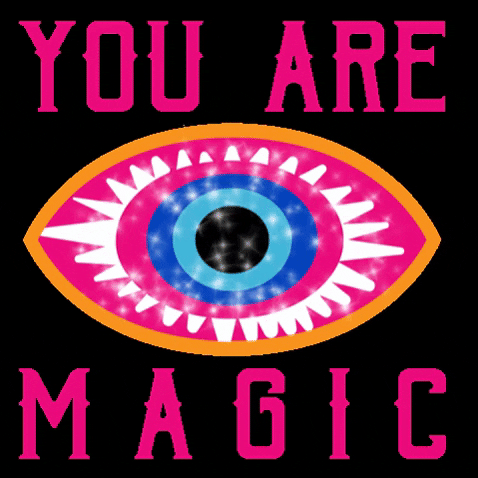
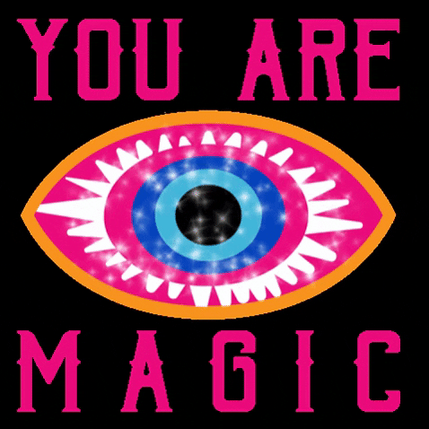

Welkom.
Ik ben dr. Simone Buys. Tot voor kort doceerde ik aan een creatieve hbo-opleiding, waar mijn visionaire plannen zich buiten het toetskader bevonden.
Na een interventie van drie erkende mediums heb ik het licht gezien en erkend wat zich reeds langer manifesteerde: ik ben pannenkoeklezer.
Mijn specialisaties omvatten:
U kent mij van de podcast Cumulatief Inzicht of mijn bestseller Het formatieve pad (of hoe ik in de feedback-flow kwam).
Deze applicatie vormt mijn dissertatie-side-hustle. Uw pannenkoek is geen toeval.